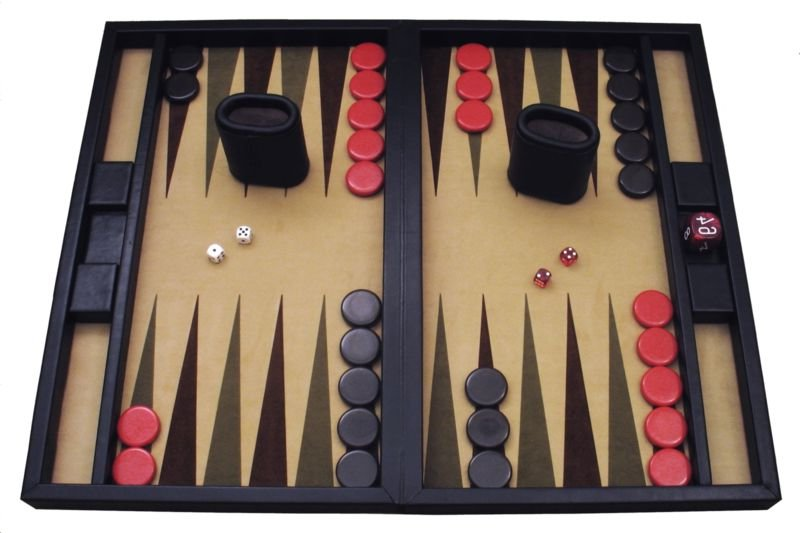

Backgammon tools in J
Vector 24:2, page 128
1: Bearoff expected rolls
J programs are presented as analytical tools for expert backgammon [1]. Part 1 here develops a program to compute the number of rolls expected to bear off all pieces in a player’s inner board (with no contact).

The inner board is represented as a list of six integers. For example, 0 0 0 2 3 4 represents 0 pieces on the 1, 2, and 3 points, 2 on the 4-point, 3 on the 5, and 4 on the 6.
Assign a few utility names for readability:
Rollsis defined for an inner board input, as in: Rolls 0 0 0 2 3 4. It is the master program and calls Bearoff or else returns a default result of 0 when all pieces are off the board:
Subprograms are:
Bearoff is 1 plus the average of expected values for all 36 rolls:
AllRolls computes the best expected value among all possible moves for each roll of dice – six doubles and two copies of the minimum of 15 pairs of singles rolls, as follows:
AllRolls =: Doubles , 2: # Min@Singles
doubles =: > 1 1 ; 2 2 ; 3 3 ; 4 4 ; 5 5 ; 6 6
singles =: > 1 2 ; 1 3 ; 1 4 ; 1 5 ; 1 6 ; 2 3;2 4;2 5;2 6;3 4;
3 5 ; 3 6 ; 4 5 ; 4 6 ; 5 6
singles =: singles ,: |."1 singles
Doubles =: doubles Best@AllMoves"1 Board
Singles =: singles Best@AllMoves"1 Board
Best calls Rolls co-recursively to get expected numbers of rolls for each board and returns the minimum – effectively finding the best move:
AllMoves generates alternative moves with the first die, then generates moves for each with the last die, or else moves four times repeatedly when the dice are doubles:
AllMoves =: (Last Moves First Moves Board) ELSE (First Moves^:4 Board)
WHEN (First=Last)
First =: {.@Dice
Last =: {:@Dice
Dice =: [
Moves produces a table of legal moves for each board given or else 0 0 0 0 0 0 as a default when all pieces are already off. LegalMoves calls Move and Possibles which calls FromTo to identify indices of each possible move from and to points:
EACH =: &.>
Moves =: ;@(LegalMoves EACH <"1)
LegalMoves =: (Possibles Move"1 Board) ELSE Board WHEN AllOff
Possibles =: FromTo Where FromTo OK"1 Board
FromTo =: On ,. On-First
Where =: #~
On =: Points Where Board > 0:
OK =: Off +. Inside +. Highest
Inside =: Last > 0:
Off =: Last = 0:
Highest =: First = Max@On
Max =: <./
Move adds 1 to the point to move to and subtracts 1 from the point to move from:
Although these programs generalize easily to the full 24-point backgammon board, they are intended only as prototypes – not for practical use. (See Appendix for an efficient program.)
Rolls may be used to compute the number of expected rolls for any number of pieces on any points in the inner board. For example:
So, it takes about two and a half rolls to bear off these pieces on the 4, 5, and 6 points.
Beware: Since multiple recursion is extremely inefficient here, input boards with more than a few pieces will be impractically time-consuming. Accordingly, Rolls should be re-defined to look up expected values from a database produced by the script in the Appendix below.
Problem¶
As a simple illustrative problem, compare the well-known end-game cases of bearing off one piece on the 1 point and one on the 6 point vs. one piece on the 2 and 5 points. Since
the latter is better.
Now consider using Rolls to decide the best move for a roll of 6 1 in the position 0 2 2 2 0 4. (Problem 487 in [2].)
Answer: Play 6-Off, 6-5 (not 6-Off, 2-1) since
Acknowledgements¶
Thanks to the Vector reviewer for testing these programs and for helpful suggestions.
Special thanks to friend and colleague UMass Computer Science Professor Paul Utgoff for years of enjoyment and sparkling discussions of backgammon and programming.
References¶
- For an introduction to backgammon, see http://en.wikipedia.org/wiki/Backgammon
- Bill Robertie, 501 Essential Backgammon Problems, Cardoza Publishing, New York, 2000
- For on-line backgammon gaming, see www.GammonVillage.com
Appendix¶
Script for backgammon bearoff (with no contact) to build list of all 54264 ncodes and corresponding list of ns using base-16 coding for all inner boards (6 points):
Build =: verb define NB. Build (6)
boards =. (6#16) #: i.16^6
boards =. boards Where (+/"1 boards) <: 15 NB. select real boards
ncodes =: 16 #."1 boards NB. base-16 codes
ns =: (#ncodes) $ 0 NB. Initialize
N"1 boards NB. Update all ns
)
N =: verb define NB. N (6 integers)
code =. 16 #. y
index =. ncodes i. code
n =. index { ns
if. n=0 do. n =. Rolls y
ns =: n index} ns NB. Update n in ns
end. n
)
ELSE =: `
WHEN =: @.
Rolls =: Bearoff ELSE 0: WHEN AllOff
AllOff =: All@(Board = 0:)
Board =: ]
All =: *./
Bearoff =: 1: + Average@AllRolls
Average =: +/ % #
AllRolls =: Doubles , 2: # Min@Singles
doubles =: > 1 1 ; 2 2 ; 3 3 ; 4 4 ; 5 5 ; 6 6
singles =: > 1 2;1 3;1 4;1 5;1 6;2 3;2 4;2 5;2 6;3 4;3 5;3 6;4 5;
4 6;5 6
singles =: singles ,: |."1 singles
Doubles =: doubles"_ BestN@AllMoves"1 Board
Singles =: singles"_ BestN@AllMoves"1 Board
BestN =: Min@:(N"1) NB. calls N co-recursively
Min =: <./
AllMoves =: (Last Moves First Moves Board) ELSE
(First Moves^:4 Board) WHEN (First=Last)
First =: {.@Dice
Last =: {:@Dice
Dice =: [
EACH =: &.>
Moves =: Unique@;@(LegalMoves EACH <"1)
Unique =: ~. ELSE ,: WHEN (#@$ < 2:)
LegalMoves =: (Possibles Move"1 Board) ELSE Board WHEN AllOff
Possibles =: FromTo Where FromTo OK"1 Board
FromTo =: On ,. On-First
Where =: #~
On =: Points Where Board > 0:
OK =: Off +. Inside +. Highest
Inside =: Last > 0:
Off =: Last = 0:
Highest =: First = Max@On
Max =: >./
Move =: Board + To1 - From1
From1 =: Points e. First
To1 =: Points e. Last
Points =: 1: + i.@6:
Build 6 NB. 43 minutes on Octiplex PC running J6.01
NB. Now #ns is 54264
NB. Next run bgn.ijs
Script bgn.ijs re-defines program N to compute expected number of rolls efficiently using ncodes and ns .